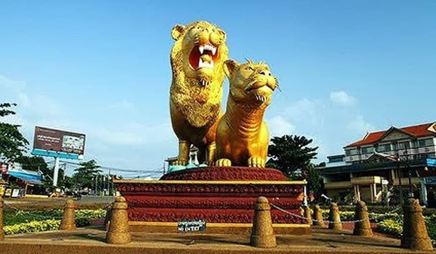

 ក្រុងព្រះសីហនុ ជាក្រុងធំបង្អស់នៅប៉ែកខាងត្បូងនៃប្រទេសកម្ពុជា ។ នេះជាក្រុងដែលត្រូវបានបង្កើតថ្មី នៅឆ្នាំ១៩៦៤ ។ ការបង្កើតក្រុងព្រះសីហនុ គឺដើម្បីរំឭកដល់ស្នាដៃរបស់ព្រះបាទនរោត្តមសីហនុ ។ ឈ្មោះដើមរបស់ក្រុងព្រះសីហនុ មុនឆ្នាំ១៩៦៤គឺកំពង់សោម ។ ក្រុងព្រះសីហនុ ជាទីក្រុងកំពងផែសមុទ្រធំបង្អស់នៅឆ្នេរសមុទ្ររបស់ប្រទេសកម្ពុជា ។ ក្រុងព្រះសីហនុស្ថិតនៅពាក់កណ្តាល ចន្លោះប្រទេសថៃ និងប្រទេសវៀតណាម ហើយក្រុងព្រះសីហនុជាទីក្រុងសំខាន់ជាងគេ នៅឈូងសមុទ្រថៃ ។ ក្រុងព្រះសីហនុជាកន្លែងដែលគួរឱ្យចាប់អារម្មណ៍ណាស់ សម្រាប់ទេសចរណ៍ជាតិនិងអន្តរជាតិ ។ យោងតាមឯកសារក្រសួងទេសចរណ៍នៃប្រទេសកម្ពុជា បានឱ្យដឹងថា ក្នុងឆ្នាំ២០០៦ មានចំនួនទេសចរណ៍អន្តរជាតិ ប្រមាណជាង ៣២០,០០០ នាក់ មកទស្សនាក្រុងព្រះសីហនុ ។ នៅខែមករា ឆ្នាំ២០០៧ ព្រលានយន្តហោះនៅក្រុងព្រះសីហនុ ត្រូវបានបើកសម្ពោធដើម្បីការហោះហើរជាសំខាន់ ក្រុងសៀមរាប-ក្រុងព្រះសីហនុ ហើយតាមគម្រោងនៃរាជរដ្ឋាភិបាល បានឱ្យដឹងថាព្រលានយន្តហោះនៃក្រុងព្រះសីហនុនឹងក្លាយជាព្រលានយន្តហោះអន្តរជាតិនៅឆ្នាំ២០១០ ។ ទីក្រុងព្រះសីហនុមានរដូវរងា ចាប់ពី វិច្ឆិកាដល់ខែកុម្ភះ និង មានរដូវលំមានប្រាំង ចាប់ ខែមិនា ដល់ខែឧសភា រដូវភ្លៀង មានចាប់ពី ខែមិថុនា ដល់ខែតុលា៕ ទីក្រុងព្រះសីហនុ គឺជាក្រុងដែលមានភ្លៀងធ្លាក់ច្រើនជាងគេ នៅប្រទេសកម្ពុជាយើង ពីព្រោះមាន ភ្នំបូគោ នៅខាងជើង។ នៅថ្ងៃដែលក្តៅជាងនៅទីក្រុងព្រះសីហនុ មានកំដៅរហូតទៅដល់ ៣៥អង្សា ហើយបើត្រជាក់ជាងគេវិញមានរហូត ២០អង្សា ៕*ឆ្នាំ ១៩៥៥ រដ្ឋាភិបាលបានចាប់ផ្តើមធ្វើកំពង់ផែ នៅចំកណ្តាលព្រៃជិតមាត់សមុទ្រ នៅកន្លែងមួយដែលបច្ចុប្បន្ននេះមានឈ្មោះថា ឆ្នេរហាវៃ ហើយធ្វើការសាងសង់រួច នៅឆ្នាំ ១៩៦០ ដោយមានជំនួយឧបត្ថមពីប្រទេសបារាំង ហើយនិងគេបានធ្វើផ្លូវពីក្រុង ភ្នំពេញ ដល់កំពង់ផែថ្មី ដោយមានជំនួយឧបត្ថម្ភពី សហរដ្ឋអាមេរិក ប្រជាជនដែល បានរស់នៅទីនោះគឺពួកគេធ្វើការនៅកំពង់ផែនោះ៕ ពេលកំពុងផែបានសាងសង់រូចហើយ គេបានហៅទីក្រុងនោះ ថា ក្រុងព្រះសីហនុ សំរាប់ធ្វើជាការគោរពចំពោះបិតាជាតិ ឆ្នាំ ១៩៦៣ គេចាប់ផ្តើមសាងសង់សណ្ឋាគារ ឯករាជ្យ ហើយមានមនុស្សជាច្រើនបានមកដើរលេងកំសាន្តនៅទីនេះ ហើយនៅក្នុងឆ្នាំដដែល គេចាប់ផ្តើមធ្វើពង្រីកកំពង់ផែ ។ ឆ្នាំ ១៩៧០ ពួកគេឈប់រស់នៅ ពីព្រោះ លន់ នល់បានធ្វើរដ្ឋប្រហារទម្លាក់ព្រះបាទនរោត្តមសីហនុ និងបានមកកាន់កាប់ប្រទេសកម្ពុជា ។ ឆ្នាំ ១៩៧០- ១៩៧៥ គេប្រើកំពង់ផែសំរាប់ដាក់អាវុធសំរាប់ធ្វើសង្គ្រាម ។ ថ្ងៃទី១៣ ខែឧសភា ឆ្នាំ ១៩៧៥ ខ្មែរក្រហម បានកាន់កាប់ ទីក្រុងព្រះសីហនុ ហើយនិងខ្មែរក្រហមបានចាប់យកកប៉ាលរបស់ សហរដ្ឋអាមេរិក ដែលមានឈ្មោះ S.S Mayaguez ជាកម្មករដែលធ្វើការ នៅលើកប៉ាល់នោះ ហើយសហរដ្ឋអាមេរិកបានទម្លាក់គ្រាប់បែកដែលធ្វើអោយក្រុងព្រះសីហនុមានការខូចខាត់យ៉ាងខ្លាំង រហូតដល់ពួកខ្មែរក្រហមប្រគល់កប៉ាល់និងមនុស្សទៅអោយសហរដ្ឋអាមេរិកវិញ ។ ឆ្នាំ ១៩៨០ សង្គ្រាមបានបញ្ចប់ គេបានចាប់ផ្តើមសាងសង់ទីក្រុងសាជាថ្មី ឆ្នាំ ១៩៩៧ រដ្ឋាភិបាល បាន អោយកន្លែងសំរាប់អង្គការ ដុនបូស្កូកម្ពូជា សំរាប់ធ្វើសាលាបច្ចេកទេស នៅផ្លូវអូរប្រាំ សំរាប់យុជនក្រីក្រនៅទីក្រុងនេះ និងមកពីខេត្តផ្សេងៗទៀតដែលនៅភាគខាងត្បូងនៃប្រទេស កម្ពុជា ។ ថ្ងៃទី ១១ ខែ កុម្ភះ ឆ្នាំ២០០៧ ព្រះបាទនរោត្តម សីហមុនី បានយាងមកក្រុងព្រះសីហនុ ឯកឧត្តម ស្បោង សារ៉ាត់ អភិបាលក្រុង បានទទួលព្រះមហាក្សត្រនៃព្រះរាជាណាចក្រកម្ពុជា ជាមួយនឹង ព្រះសង្ឃនិមន្តមកពីគ្រប់វត្តនិង ថ្នាក់អ្នកដឹកនាំគ្រប់ជាន់ថ្នាក់ នៅក្រុងព្រះសីហនុ និងលោកគ្រូ អ្នកគ្រូ សិស្សានុសិស្ស ហើយ និងសាលាបច្ចេកទេស ដុនបូស្កូ ក្រុងព្រះសីហនុ៕